Mono Aullador
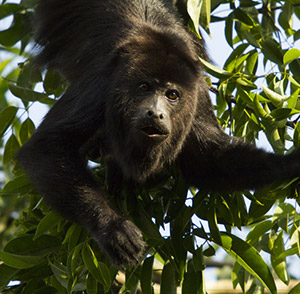
Soy un mamífero herbívoro. En el día me alimento de las hojas verdes de los árboles y una que otra fruta. Casi nunca bajo de los árboles pues ahí estoy más seguro. Puedo rugir muy fuerte, y por eso me llaman aullador. Vivo en grupos pequeños con mi familia.
Águila Arpía
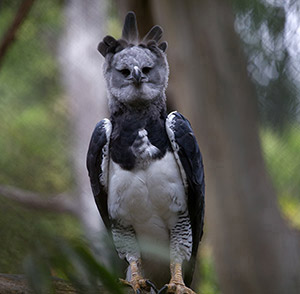
Soy una de las grandes aves depredadoras en la selva. Me alimento durante el día de deliciosos monos, sabrosas martuchas, riquísimos osos hormigueros y otros animales que se trepan a los árboles.
Guacamaya Roja
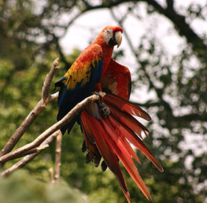
Soy uno de los pericos más grandes y coloridos. Durante el día me alimento de nutritivos frutos y semillas. Vivo en los huecos de los árboles y casi siempre vuelo acompañada de mi pareja. ¿Verdad mi amor?
Cocodrilo de pantano
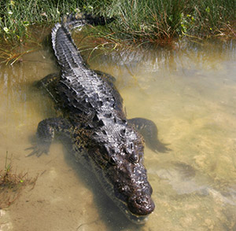
Soy un reptil depredador de gran tamaño que vivo en el agua. Por la noche me alimento de peces, tortugas, y uno que otro animal terrestre descuidado que se acerca al agua. Me gusta tomar el sol a la orilla del pantano.
Mariposa Morfo
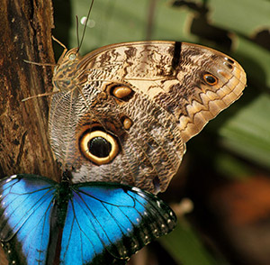
Soy una de las mariposas más grandes y llamativas de la selva. Durante el día me alimento de néctar de las flores y transporto su polen a otras flores. Me gusta volar por arriba de los arroyos. Cuando me paro, oculto mi brillante color azul ya que mis alas son de color café por abajo.
Orquídeas
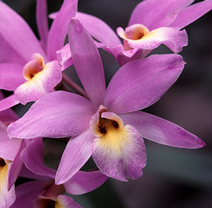
Vivimos arriba de los árboles, pero no les causamos daño. ¡Somos grandes equilibristas! Tenemos hermosas flores que son visitadas por insectos. Ellos transportan nuestro polen a otras orquídeas.
Tapir
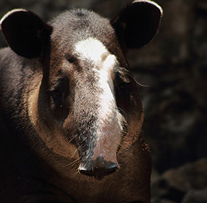
Soy el mamífero más grande y guapo de las selvas. Me alimento de plantas y me gusta mucho sumergirme en el agua, donde además de refrescarme y quitarme los mosquitos, me escondo de los depredadores que me quieren desayunar, comer o cenar.
Jaguar
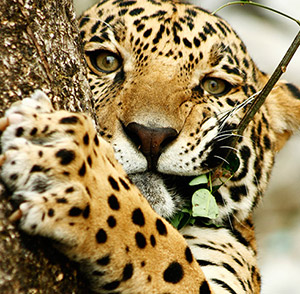
Soy el mamífero depredador más grande de la selva. Mis presas no tienen chance. Las puedo atrapar en los árboles, en el suelo o en el agua, durante el día o la noche. Me alimento de mamíferos, aves y reptiles. Puedo capturar animales tan grandes como un cocodrilo y tan pequeños como un ratón.
Mono Araña
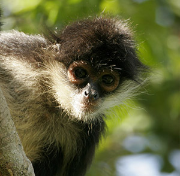
Soy un mamífero herbívoro. En el día me alimento de frutos y algunas hojas, pero también le entro a los huevos de pájaro que me encuentro en el camino. Utilizo mi larga cola como si fuera un quinto brazo. Vivo en grupos en la copa de los árboles y casi nunca me verás en el suelo. Más vale ser precavido ¿no?
Boa Mazacuata
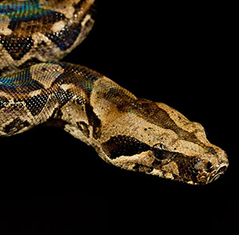
Soy una de las serpientes más grandes en la selva. Soy un depredador de animales pequeños, como pájaros, ratones, conejos, y tlacuaches. Puedo treparme fácilmente a los árboles.
Bromelia
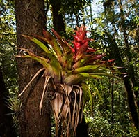
Soy una planta con hermosas flores que vive arriba de los árboles. Tengo muchas hojas como las alcachofas o los magueyes. Cuando llueve, atrapo el agua entre mis hojas y ahí viven gran cantidad de hormigas, alacranes, arañas, escarabajos y hasta ranas. ¡Soy como un gran edificio!
Pecarí de Labios Blancos
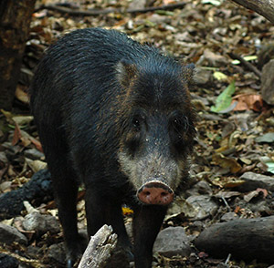
Soy un mamífero herbívoro. Por las mañanas y las tardes me alimento de deliciosas plantas, raíces, jugosos frutos y semillas del suelo de la selva, pero tengo unos grandes colmillos con los que me defiendo si alguien me quiere echar bronca. Vivo en grandes familias de hasta 60 pecaríes.
Rana Arbórea
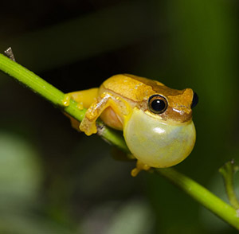
Soy un anfibio insectívoro. Por la noche me alimento de pequeños insectos que atrapo con mi larga lengua. Puedo buscarlos en el suelo o treparme a los árboles y sin hacer ruido, esconderme en las bromelias para atraparlos.
Escarabajo Rinoceronte
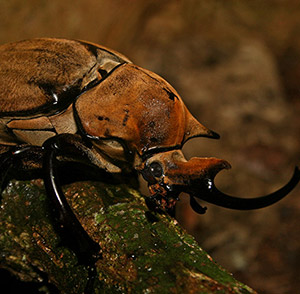
Soy uno de los insectos de mayor tamaño y con más fuerza. Me alimento de madera y hojas en descomposición, ¡mmmmm, qué rico! Los machos tenemos un cuerno en la cabeza que utilizamos para escarbar y enterrarnos en el suelo y también para presumir.
Lacandonia
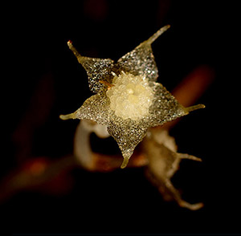
Soy una plantita minúscula, chiquita, chiquita... pero única en el mundo. Comparto el alimento con los hongos, ya que no tengo hojas verdes para producirlo como otras plantas. Apenas me descubrieron hace unos años, ¡me había escondido muy bien! Desde entonces muchos curiosos vienen a estudiarme.
Hormigas Arrieras
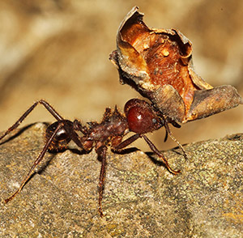
Somos insectos sociales que vivimos en colonias con miles de parientes. ¡Sí! Nos alimentamos de hongos dentro de nuestros hormigueros. Pero para cultivar los hongos tenemos que acarrear muchos pedacitos de hojas que preparamos dentro del hormiguero